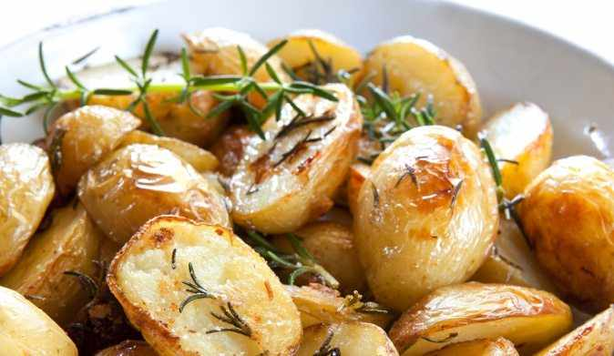

Картофель «Для гурмана»Требуется:
250 г креветок, 7–8 картофелин, 4 соленых огурца, 40 г масла, 200 г шампиньонов, 2 баночки майонеза, 3 яйца, 20 каперсов, 3 ст. л. горчицы, соль, перец, зелень.
Способ приготовления.
Хорошенько вымойте крупные картофелины и отварите их. Когда картофель сварится, слейте воду и дайте ему немного остыть.
Очистите креветки, поджарьте их на масле. Огонь должен быть маленьким. Через некоторое время добавьте мелко нарезанные грибы.
Приготовьте майонезный соус: измельчите каперсы и мелко нарежьте соленые огурцы, добавьте их в майонез. Горчицу смешайте с мелко нарезанной зеленью укропа, петрушки и сельдерея. Всю массу смешайте с майонезом, чтобы получился соус.
Осторожно разрежьте каждую картофелину вдоль, ложкой аккуратно выньте мякоть и заполните готовой начинкой образовавшееся углубление. Промажьте начинку слоем соуса и слепите по две половинки вместе.
Фаршированный картофель выложите на противень и поставьте в заранее нагретую духовку. Запекайте в течение 10 мин. Когда картофель будет готов, выложите его на блюдо и полейте соусом, который у вас остался.
Картошка «С начинкой»Требуется:
9 картофелин, 150 г сыра, 2–3 яйца, 200 г сметаны, соль.
Способ приготовления.
Отберите картофелины одинакового размера, тщательно вымойте его и уложите на противень, посыпанный тонким слоем соли. Поставьте противень в нагретую духовку и пеките картофель в течение 30 мин. Когда картофель будет готов, аккуратно срежьте верхушки, выньте ложкой серединки и сложите на отдельную тарелку.
Натрите сыр на мелкой терке, смешайте его со сметаной. Сваренные вкрутую яйца очистите и извлеките желтки, которые добавьте в сыр. Посолите мякоть картофеля и подмешайте ее к сыру и сметане. Как следует перемешайте полученную смесь и нафаршируйте ею пустые картофелины.
«Горшочек с сюрпризом»Требуется:
10–12 картофелин, 450–500 г фарша, 2 луковицы 50 г риса, 60 г сметаны, перец, соль.
Способ приготовления.
Очищенные картофелины хорошенько промойте и срежьте верхушки. Ножом аккуратно вырежите сердцевину у клубней. Приготовьте начинку для картофеля: прокрутите мясной фарш, добавьте рис и лук, все поперчите и хорошенько перемешайте. Нафаршируйте приготовленной смесью каждый клубень, картошку поместите в горшочек и залейте сметаной. Горшочки поставьте в заранее нагретую духовку.
Картофель, фаршированный крольчатинойТребуется:
500 г картофеля, 400 г крольчатины, 200 г репчатого лука, 100 г изюма, 3 ст. л. растительного масла, 20 г зелени петрушки, 1 ч. л. черного молотого перца, 1 ч. л. соли.
Способ приготовления.
Картофель очистите и отварите в подсоленной воде до полуготовности. Ножом или специальной выемкой сделайте в каждой картофелине по углублению и заполните их грибным фаршем. Сложите в сотейник, залейте грибным бульоном и тушите до готовности.
Для приготовления начинки крольчатину нарежьте на небольшие кусочки, обжарьте на раскаленном растительном масле вместе с нарезанным полукольцами репчатым луком. Залейте водой, положите соль, изюм, специи. Перед подачей к столу посыпьте блюдо рубленой зеленью, полейте сметаной.
Картофель со сметанойТребуется:
300 г картофеля, 20 г сливочного масла, 3 ст. л. тертого сыра, 1 яичный желток, 2 ст. л. сметаны, соль, перец.
Способ приготовления.
Картофель вымойте, разрежьте вдоль, удалите часть мякоти, посолите и поперчите. Смешайте масло, тертый сыр, желток, сметану, соль и перец, полученным фаршем заполните картофелины, заверните в фольгу и запеките в углях.
Картофель «Сытный»Требуется:
700 г картофеля, 450–500 г куриного или говяжьего фарша, 200 г репчатого лука, 50 г риса, 1 стакан сметаны, растительное масло или животный жир для смазки горшочков, перец, соль.
Способ приготовления.
Картофель очистите, срежьте у каждого клубня одну из верхушек. Острым ножом или специальным приспособлением аккуратно выньте из картофельных клубней сердцевину.
Сердцевинки нарежьте крупными кусочками. Нашинкуйте лук и смешайте с картофелем, мясным фаршем и промытым в воде рисом, посолите и поперчите.
Начините каждый клубень фаршем. Смажьте горшочки для вторых блюд растительным маслом или животным жиром и поместите в каждый горшочек по 4–5 клубней. Залейте сметаной и поставьте в духовой шкаф, разогретый до 200 °C. Горшочки можете вынимать из духовки через 30–40 мин.
Картофель, фаршированный грибамиТребуется:
500 г картофеля.
Для фарша: 80 г сушеных грибов (или 200 свежих), 2 яйца, 2 головки репчатого лука, 50 г сливочного масла, 2 ст. л. молотых сухарей, соль, зелень.
Способ приготовления.
Картофель очистите и отварите в подсоленной воде до полуготовности. Ножом или специальной выемкой сделайте в каждой картофелине по углублению и заполните их грибным фаршем. Сложите в сотейник, залейте грибным бульоном и тушите до готовности.
При подаче к столу сверху положите кусочек масла и посыпьте рубленой зеленью.
Картошка с секретомТребуется:
9 картофелин, 150 г сыра, 2 яйца, по 200 г сметаны и мясного фарша, соль, чеснок.
Способ приготовления.
Картофелины одинакового размера выложите на противень, посыпанный тонким слоем соли. Запеките до полуготовности, аккуратно срежьте верхушку, выньте ложкой серединку. Тертый сыр, фарш, сметану, яйца, мякоть картофеля смешайте, посолите, поперчите, добавьте измельченный чеснок. Начините картофелины. Закройте картофельными крышечками, поставьте в духовку и пеките до готовности. Перед подачей к столу полейте сметаной.
Картофель, фаршированный лукомТребуется:
Несколько картофелин, растительное масло, репчатый лук, зелень петрушки, молотые сухари.
Способ приготовления.
Картофелины одинакового размера очистите, срежьте верхнюю часть, отварите до полуготовности, выньте из клубня ложкой середину. Доварите картошку, протрите, соедините с разогретым растительным маслом, поджаренным репчатым луком, мелко нарубленной зеленью петрушки. Заполните фаршем картофелины, положите на сковороду, смазанную маслом, посыпьте молотыми сухарями, сбрызните растительным маслом, запеките в духовке.
Картофель, фаршированный гречневой кашейТребуется:
Картофель, гречневая каша, лук, сыр, зелень.
Способ приготовления.
Картофель испеките, срежьте верхушки, удалите сердцевину. Сварите гречневую кашу, добавьте поджаренный лук, немного растительного масла. Фаршем наполните картофель, посыпьте сверху сыром, дайте постепенно прогреться в духовке.
Подавайте с растительным маслом и зеленью.
Гарнир «Семейный»Требуется:
9 картофелин, 40 г масла сливочного, соль, зелень.
Способ приготовления.
Очищенный картофель поставьте вариться до полной готовности. Слейте воду, а сваренный картофель поставьте на огонь, чтобы лишняя влага испарилась. Растопите на медленном огне в отдельной кастрюльке сливочное масло и полейте им картофель. Мелко порежьте пряную зелень, зеленый лук и посыпьте ими картофель.
Пюре со сметанойТребуется:
10 картофелин, 1 стакан сметаны, 30 г сливочного масла.
Способ приготовления.
Очищенный картофель сварите в соленой воде. Воду слейте не до конца: оставьте примерно пятую часть жидкости. Поставьте кастрюлю на огонь, добавьте сметану и закройте крышкой. Тушите картофель на медленном огне в течение 3 мин. Готовый картофель разомните с добавлением масла.
Пюре с кефиромТребуется:
10 картофелин, 1 стакан кефира, 40 г масла, соль, укроп.
Способ приготовления.
Сварите очищенный картофель, слейте воду и проверните картофель через мясорубку. Добавьте кусочек масла, чуть присолите. Влейте в протертый картофель кефир и всыпьте мелко нарезанный укроп.
Пюре по-украинскиТребуется:
10 картофелин, 70 г сала, 1 стакан молока, 40 г масла сливочного, соль.
Способ приготовления.
Сварите очищенный картофель в соленой воде и прокрутите его через мясорубку. Добавьте масла и горячего молока. Порежьте соленое сало на кусочки и пожарьте шкварки. Выложите в сковородку со шкварками пюре, хорошенько перемешайте, закройте крышкой и потомите пюре со шкварками минуты три.
Пюре «Воздушный замок»Требуется:
9 картофелин, 150 г молока, 1 яйцо, соль.
Способ приготовления.
Почистите картофель и отварите его в соленой воде. Пусть варится в течение 25 мин. Как только увидите, что картофель начинает развариваться, слейте воду и протрите его через сито. В отдельную эмалированную посуду разбейте яйцо, хорошенько взбейте, добавьте молоко, посолите. Поставьте миску на огонь и доведите ее содержимое до кипения. Смешайте кипяченое неостывшее молоко с картофелем, перемешайте и подавайте на стол.
Пюре «Снежное»Требуется:
9 – 11 картофелин, 250 г «Ряженки» или «Снежка», 40 г масла, соль.
Способ приготовления.
Очищенный и промытый картофель сварите в подсоленной воде. Когда картофель будет готов, оставьте немного воды. Поставьте кастрюлю на медленный огонь и добавьте в картофель «Снежок» или «Ряженку». Потомите картофель под закрытой крышкой 3–4 мин. После этого кастрюлю с картофелем встряхните и разомните его. Добавьте кусочек масла и подсолите – по вкусу.
Картофель «Золотой»»Требуется:
14–15 некрупных картофелин, 50 г растительного масла, 250 г майонеза, 2–3 зубчика чеснока, зелень петрушки и укропа.
Способ приготовления.
Очищенные и хорошо промытые картофелины разрежьте вдоль на две части. Противень смажьте растительным маслом и уложите на него половинки картофелин. Поставьте противень в нагретую духовку и запекайте картофель до появления золотистой корочки. К картофелю приготовьте майонезный соус: смешайте майонез с тертым чесноком и зеленью.
Картофель по-латвийскиТребуется:
9 – 11 картофелин, 450 г молока, 30 г масла, соль, зелень.
Способ приготовления.
Очищенный картофель порежьте кубиками, хорошенько промойте в холодной воде и опустите в кастрюлю. Налейте молоко в стакан, посолите, поперчите и вылейте в кастрюлю с картофелем. Следите, чтобы молоко не подгорало (поэтому не берите эмалированную кастрюлю). Тушите на очень медленном огне под закрытой крышкой. Минут за пять до готовности добавьте сливочное масло. Перед подачей к столу посыпьте картофель мелко нарезанной зеленью петрушки.
Картофель с зеленьюТребуется:
9 – 10 средних картофелин, 50 г сметаны, соль, зелень.
Способ приготовления.
Очищенный и промытый картофель уложите на дуршлаг. Большую кастрюлю наполните водой на четыре пальца и поставьте на огонь. Когда вода закипит, можете ставить дуршлаг с картофелем. Картофель посолите и закройте крышкой. Варите картофель на пару в течение 20 мин. Огонь можно сделать средний. Когда картофель сварится, полейте его сметаной и посыпьте мелко нарезанной зеленью укропа, петрушки, сельдерея и базилика.
«Монетный двор»Требуется:
10–12 картофелин, майонез, кетчуп, 40 г растительного масла.
Способ приготовления.
Очищенный и хорошо промытый картофель нарежьте кружочками толщиной в 2 см. Смажьте противень растительным маслом и уложите картофельные ломтики. Каждый ломтик обязательно посолите, поперчите, смажьте майонезом или кетчупом.
Картофель, запеченный в фольгеТребуется:
14–15 средних картофелин^, соль, перец.
Способ приготовления.
Очищенный и вымытый картофель заверните в фольгу, которую предварительно смажьте маслом. Каждую картофелину обязательно посолите и поперчите. Нагрейте духовку до 200 °C и поставьте в нее противень с картофелем. Минут через 40 картофель будет готов. К запеченному картофелю подайте майонезный или томатный соус.
Картофель печеный «Дачный»Требуется:
На 12 не очень крупных картофелин – 4 ст. л. сливочного масла.
Способ приготовления.
Одинаковые клубни картофеля тщательно промыть и обсушить, положить на сковороду, на дне которой должен быть слой соли, сверху картофель опять засыпать солью и поставить в духовой шкаф для запекания.
Запекается картофель полтора часа. Готовый печеный картофель подать к столу в горячем виде. Отдельно подать сливочное масло. Можно к печеному картофелю подать рубленую сельдь, растертую со сливочным маслом и мелко порубленными яйцами.
Картофель можно не засыпать солью, а завернуть в алюминиевую фольгу и, так же как в соли, запекать до готовности.
«Картофельный пузырь»Требуется:
800 г картофеля, 100 г жира для фритюра, апельсин, 1 ч. л. сахара, соль, зелень базилика, мяты.
Способ приготовления.
Сырой картофель нарежьте кружками, дольками или брусочками. Перед жаркой промойте в холодной воде, а затем слегка присыпьте смесью сахара и соли, перемешайте. В сотейнике нагрейте жир до 170–180 °C, положите в него картофель и жарьте, периодически помешивая, до образования румяной корочки. Готовый картофель выньте из жира шумовкой, положите на дуршлаг и дайте жиру стечь. Переложите на блюдо, сбрызните апельсиновым соком, украсьте кружками апельсина и ароматной зеленью.
Картофельные котлетыТребуется:
1 кг картофеля, 400 г курятины или свинины, 2 яйца, 2 ст. л. муки или панировочных сухарей, 4 ст. л. сметаны, зелень укропа или петрушки.
Способ приготовления.
Картофель очистите, отварите. Отвар слейте, картофель обсушите и разомните до образования пюре. Отваренное мясо проверните через мясорубку и смешайте с картофельным пюре, добавьте сырые яйца, хорошо размешайте и разделите на котлеты. Запанируйте их в муке или сухарях и обжарьте с обеих сторон до золотистой корочки. Подайте котлеты с маслом или со сметаной.
Печеная картошкаТребуется:
800 г картофеля, 250 г филе малосольной сельди, 2 головки репчатого лука, 1/2 стакана сметаны, 1/2 л мясного бульона, 2 ст. л. муки, 50 г сливочного масла, 200 г сыра, соль, специи, молотые сухари, зелень петрушки и укропа.
Способ приготовления.
Филе сельди вымочите в воде в течение 40 мин, нарежьте мелкими кусочками и припустите с мелко нарубленным спассерованным луком и сметаной. Затем добавьте бульон, муку, смешанную со сливочным маслом, и проварите до загустения. Вареный картофель, нарезанный кубиками, положите на порционную сковородку, залейте соусом с сельдью, посыпьте тертым сыром, смешанным с молотыми сухарями, сбрызните маслом и запекайте в духовке при температуре 170 °C. Готовый картофель переложите на блюдо, украсьте листочками зелени и полейте образовавшимся соком.
Фаршированный картофельТребуется:
700 г картофеля, 70 г филе малосольной сельди, 100 г филе щуки или судака, 2 головки репчатого лука, 4 ч. л. бульона, 3 ст. л. сметаны, 120 г жира для фритюра, 200 г пшеничного хлеба, 1/2 стакана молока, соль, специи, зелень укропа.
Способ приготовления.
Крупный, одинакового размера картофель очистите и обжарьте в большом количестве жира (во фритюре) до образования румяной корочки. Ложкой выньте из картофелин сердцевину. Для фарша филе сельди мелко порубите, прибавьте сырое мелко рубленное филе щуки или судака, сырой рубленый репчатый лук, предварительно замоченный в молоке белый хлеб, соль, специи и измельченный укроп. Все хорошо перемешайте и заполните фаршем подготовленные картофелины. Затем уложите их в глубокий сотейник, подлейте бульона и припустите в духовке до готовности. За несколько минут до подачи к столу влейте в картофель сметану и нагрейте до кипения. Подавайте, украсив укропом.
Картофельная запеканкаТребуется:
700 г картофеля, 60 г сливочного масла, 2 яйца, по 1/2 стакана молока и сметаны, соль, черный молотый перец, панировочные сухари.
Для фарша: 400 г жареной свинины, 100 г отварного ливера, головка репчатого лука, специи.
Способ приготовления.
Очищенный картофель отварите в подсоленной воде и приготовьте пюре с добавлением молока и рубленых вареных яиц. На противень, смазанный маслом, посыпанный панировочными сухарями, выложите слой картофельного пюре и разровняйте его, положите на него слой фарша из жареной свинины, кольца репчатого лука, а сверху – слой отварного ливерного фарша. Верх покройте картофельным пюре, смажьте его сметаной и посыпьте сухарями, запекайте в духовке.
Картофельные «коробочки»Требуется:
600 г картофеля, 1 л воды, 1 стакан молока, 50 г сливочного масла, 3 яйца, 3 ст. л. сметаны, 100 г сыра, соль, черный молотый перец, зелень петрушки и укропа.
Способ приготовления.
Картофель отварите в подсоленной воде, разомните с молоком до пюре. Готовое пюре заправьте солью, маслом и сырым яйцом, положите в кондитерский мешок с зубчатой трубочкой. На порционную сковороду или блюдо, смазанные маслом, выпустите пюре в форме овальных «коробочек». Картофельные «коробочки» смажьте яичным желтком и запеките в духовке. В каждую коробочку влейте взбитое сырое яйцо, полейте сметаной и посыпьте тертым сыром, посолите, поперчите и опять запекайте в духовке до готовности яичницы. Готовое блюдо переложите на тарелку и посыпьте рубленой зеленью.
Картофельная драченаТребуется:
600 г картофеля, 400 г свинины, 1 стакан пшеничной муки, по 50 г шпика и сливочного масла, головка репчатого лука, 1/2 ч. л. соды, соль, черный молотый перец, зелень укропа или петрушки.
Способ приготовления.
Сырой картофель натрите на терке, добавьте пшеничную муку, соль, питьевую соду, перец, нашинкованный репчатый лук, спассерованный на шпике, и мелкие кусочки обжаренной свинины. Все хорошо перемешайте, положите на противень, смазанный жиром, равномерно разровняйте и запекайте в духовке. Картофельную драчену порежьте на куски, переложите на блюдо, сбрызните маслом, украсьте зеленью.
КрокетыТребуется:
1/2 кг картофеля, головка репчатого лука, 2 яйца, 400 г куриного мяса, 1 ч. л. изюма, 30 г сливочного масла, 1 ст. л. мясного бульона, 3 ст. л. кукурузной муки, 1/ л оливкового масла, соль на кончике ножа, немного сухого тимьяна, зелень петрушки.
Способ приготовления.
Картофель очистите, разрежьте на четвертинки и 25–30 мин проварите в подсоленной воде. Лук, яйцо мелко порубите, куриное мясо нарежьте маленькими кусочками. Изюм замочите и дайте стечь воде. На разогретом сливочном масле поджарьте лук до прозрачности, добавьте рубленую зелень петрушки, тимьян, мясной бульон и поджарьте все, непрерывно помешивая. Положите рубленое яйцо, изюм и куриное мясо. Картофель растолките в пюре, вмешайте желток и дайте немного остыть. В сотейнике разогрейте оливковое масло. Руки обмакните в муке и сформуйте из мясного фарша шарики размером с грецкий орех, затем облепите их картофельным пюре, обваляйте в кукурузной муке и со всех сторон подрумяньте в оливковом масле.
Картофельное суфлеТребуется:
400 г картофеля, 200 г сыра, 70 г сливок, 2 яйца, 50 г сливочного масла.
Способ приготовления.
Сырой картофель натрите на терке, добавьте к картофельной массе тертый сыр, взбитые сливки и взбитые белки. Массу хорошо перемешайте, выложите на смазанную маслом сковороду, посыпьте тертым сыром и запекайте.
Готовое суфле выложите на блюдо и порежьте на порционные кусочки.
«Колобки»Требуется:
1/2 кг картофеля, по 1 стакану пшеничной муки и молока, 30 г дрожжей, 50 г сливочного масла, 3 ст. л. сахара, 5 ст. л. сметаны
Для сырного соуса: по 100 г твердого сыра, плавленого сыра и свежих помидоров, 1/2 стакана сметаны, 3 зубчика чеснока.
Способ приготовления.
Из муки, молока, сахара и дрожжей замесите кислое тесто, раскатайте его в лепешки толщиной 1 см, на них уложите картофельное пюре, смажьте сметаной и запекайте. Выпеченные колобки переложите на блюдо и полейте сырным соусом. Для него сыр натрите на крупной терке и подогрейте, чтобы он расплавился и образовал сметаноподобную массу. Зубчики чеснока очистите и выжмите из него сок. Помидоры очистите от кожуры и аккуратно нарежьте ломтиками. Все ингредиенты для соуса смешайте, поставьте на слабый огонь и немного подогрейте, постоянно помешивая соус.